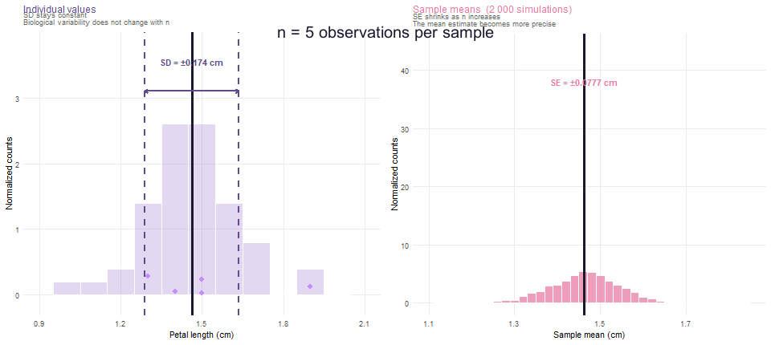
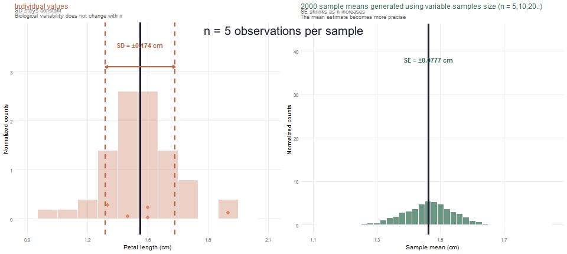
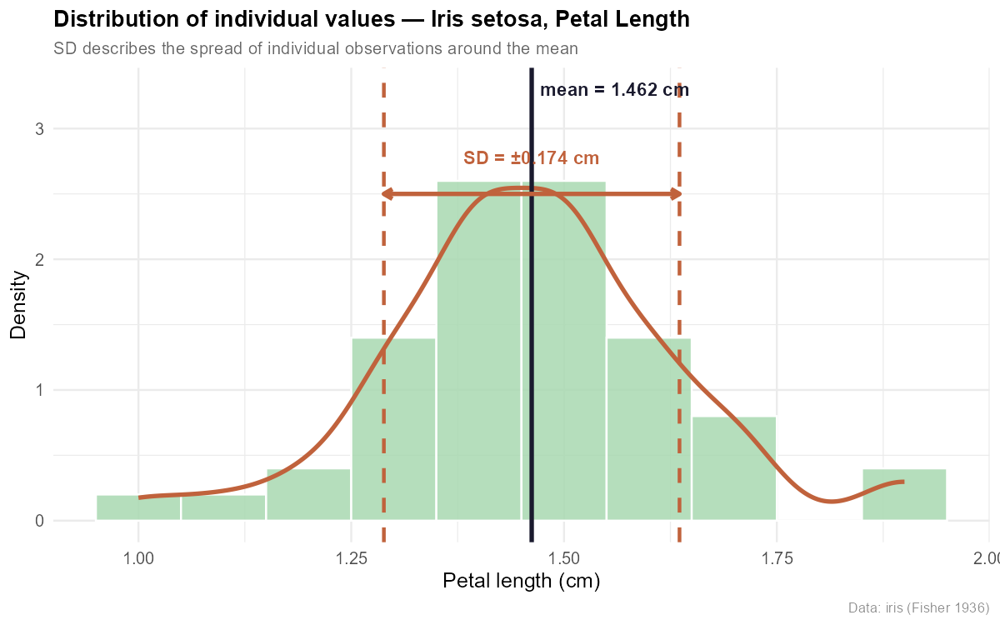
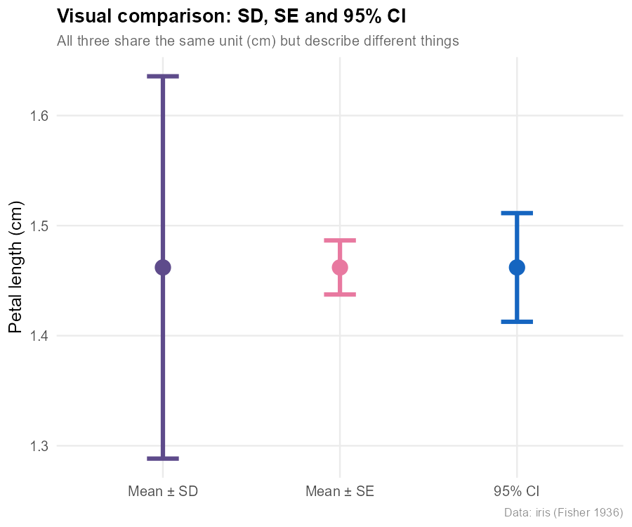
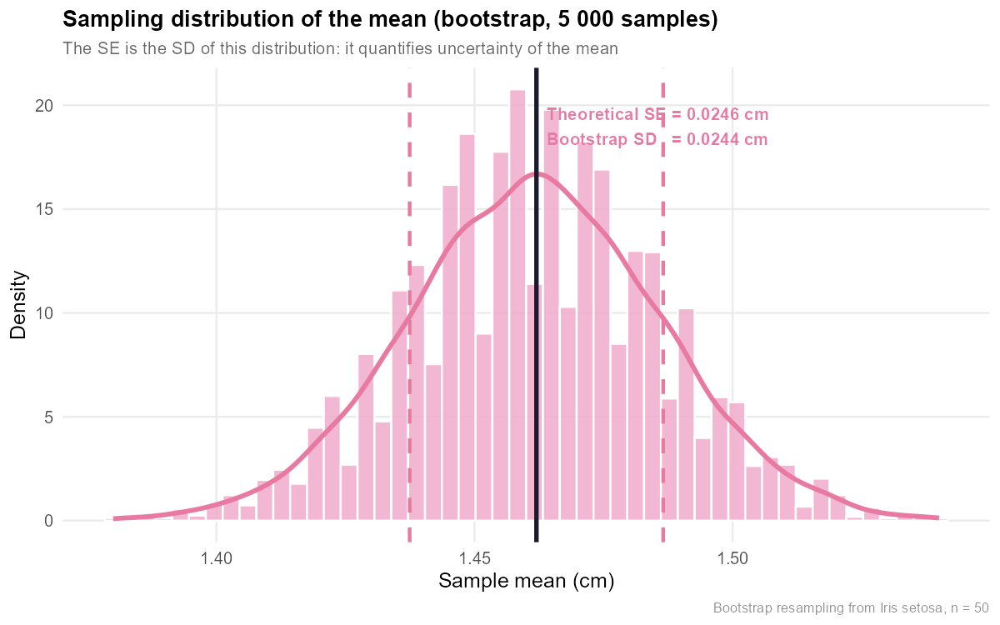
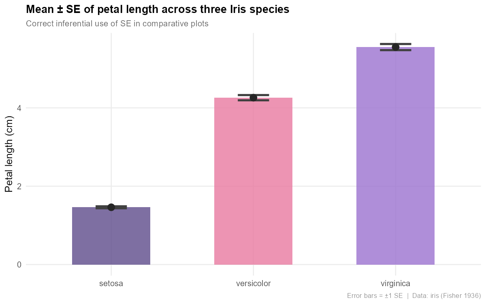

Introduction
In the scientific literature, two indices are often confused or used as synonyms: the Standard Deviation (SD) and the Standard Error of the Mean (SE). Both are expressed in the same units as the data, and both frequently appear in the same places — error bars in figures, mean ± value in the text. Yet they answer fundamentally different questions.
SD answers: "How much do individual observations vary in my sample?"
SE answers: "How precisely does my sample mean estimate the true population mean?"
Understanding this difference is not a minor technical detail. It is essential for interpreting your data correctly, choosing the most honest figure, and applying statistical tests in the right way. In this lesson we will cover the theory, the formulas, and then calculate both indices together in R using real biological data.
This lesson assumes you are familiar with the concepts of sample mean and random sampling. Topics such as sampling distributions, the Central Limit Theorem and the t-test are mentioned but will be covered in dedicated lessons.
Standard Deviation (SD)
Definition
The sample standard deviation measures how spread out the individual values are around the sample mean. It tells us how far, on average, each single observation lies from the group mean. It is an index of the intrinsic variability of the phenomenon being studied.
In biology this index is everywhere: the variation in wing length across a species of insects, the distribution of yield per plant in a field, the body weight in a population of vertebrates. All these variables have a SD that describes how "heterogeneous" the individuals in the sample are.
Formula
Where: $x_i$ = value of the $i$-th observation | $\bar{x}$ = sample mean | $n$ = sample size | $n-1$ = degrees of freedom (Bessel's correction)
Dividing by $n-1$ rather than $n$ makes the sample variance an unbiased estimator of the population variance $\sigma^2$. This happens because the sample mean $\bar{x}$ is estimated from the same data used to calculate the SD, which "uses up" one degree of freedom. This point will be explored in a dedicated lesson on estimators.
Key properties
- Measured in the same units as the original data (e.g. cm, g, individuals per trap).
- Always non-negative; equals zero only when all values are identical.
- Does not decrease systematically with larger samples: as $n$ grows, it converges to the population standard deviation $\sigma$.
- For roughly normal distributions, about 68% of values fall within $\bar{x} \pm 1 \cdot s$, and about 95% within $\bar{x} \pm 2 \cdot s$.
- Sensitive to outliers: a single extreme value can inflate the SD considerably.
Practical use
The SD is a descriptive tool. It should be used when you want to characterise the biological variability of a trait, describe the distribution of a character in a population, or define biological reference ranges. In figures, SD error bars show where individuals fall, not the precision of the mean estimate.
- Short bars: Indicate that the values of your sample are all very close to the mean value. There is low variability and the data is highly "concentrated".
- Long bars: Indicate that the sample values are very spread out and far from the mean. There is high variability in the observed phenomenon.
Standard Error of the Mean (SE)
Definition
The Standard Error of the Mean estimates how precisely the sample mean $\bar{x}$ approximates the true population mean $\mu$. More formally, it is the standard deviation of the sampling distribution of the mean: if we repeated the sampling many times and calculated the mean each time, that series of means would have its own standard deviation — and that is exactly the SE.
Imagine sampling the petal length of 50 specimens of Iris setosa at ten different sites: you would get ten slightly different sample means. The SE quantifies how much those means vary around the true mean of the species.
Formula
Where: $s$ = sample standard deviation | $n$ = sample size
The formula immediately reveals a key property: the SE is always smaller than the SD (since $\sqrt{n} > 1$ for $n > 1$), and it decreases proportionally to $1/\sqrt{n}$. To halve the SE you need to quadruple the sample size.
Key properties
- Measured in the same units as the data, just like the SD.
- Decreases as $n$ increases: the more observations we collect, the more precise the mean estimate.
- Depends on both the variability in the data ($s$) and the number of observations ($n$).
- Foundation for confidence intervals: $CI_{95\%} \approx \bar{x} \pm 1.96 \cdot SE$ (for large samples).
- For small samples, use Student's $t$ quantile instead: $\bar{x} \pm t_{\alpha/2,\, n-1} \cdot SE$.

The Standard Error is not a measurement error, not instrument noise, and not a sign of poor data quality. It does not measure how much individuals differ from each other. It measures one specific thing: how much the sample mean would fluctuate if we repeated the sampling many times. A large SE means we need more data to pin down the mean reliably — nothing more, nothing less.
Practical use
The SE is an inferential tool. Use it when you want to make statements about the population mean, build confidence intervals, or compare the means of different groups (treatments, species, sites, years). SE error bars in figures show the uncertainty around the mean estimate — which is the relevant information for group comparisons.
Comparison between SD and SE
The table below summarises the key differences. Keeping these in mind makes it much easier to choose correctly in everyday practice.
| Aspect | Standard Deviation (SD) | Standard Error (SE) |
|---|---|---|
| What it measures | Variability of individual observed values | Precision of the mean estimate |
| Question it answers | "How much do individuals vary?" | "How reliable is my mean?" |
| Effect of n | Stable (converges to $\sigma$) | Decreases as $1/\sqrt{n}$ |
| Type of statistic | Descriptive | Inferential |
| Formula | $s = \sqrt{\sum(x_i-\bar{x})^2/(n-1)}$ | $SE = s/\sqrt{n}$ |
| Error bars in figures | To describe data spread | To compare means between groups |
| Relationship | SD ≥ SE always | SE = SD / $\sqrt{n}$ ≤ SD |
Many papers report error bars without specifying whether they represent SD or SE. Since the SE is always smaller than the SD, using SE in a descriptive figure makes the data look far less variable than it actually is. Some journals now require 95% confidence intervals for this reason. Always check the figure legend.

Practical Example in R
We use the iris dataset, built into R, focusing on Iris setosa and petal length (Petal.Length). The sample has $n = 50$ measurements in centimetres. Simple, real biological data — perfect for illustrating both indices concretely.
The complete R scripts are in the R/ folder of the repository. Download them with the buttons below.
# Load built-in dataset
data(iris)
# Extract: Iris setosa, petal length
setosa_pl <- iris[iris$Species == "setosa", "Petal.Length"]
n <- length(setosa_pl) # sample size
xbar <- mean(setosa_pl) # sample mean
# Standard Deviation — sd() uses Bessel's correction (n-1)
sd_val <- sd(setosa_pl)
# Standard Error — no built-in function in base R
se_val <- sd_val / sqrt(n)
# 95% Confidence Interval using Student's t (df = n-1)
t_crit <- qt(0.975, df = n - 1)
ci_low <- xbar - t_crit * se_val
ci_high <- xbar + t_crit * se_val
cat(sprintf(" Sample size (n) : %d\n", n))
cat(sprintf(" Sample mean : %.4f cm\n", xbar))
cat(sprintf(" Standard Deviation (SD) : %.4f cm\n", sd_val))
cat(sprintf(" Standard Error (SE) : %.4f cm\n", se_val))
cat(sprintf(" Mean +/- SD : [%.4f - %.4f] cm\n",
xbar - sd_val, xbar + sd_val))
cat(sprintf(" Mean +/- SE : [%.4f - %.4f] cm\n",
xbar - se_val, xbar + se_val))
cat(sprintf(" 95%% CI (t, df=%d) : [%.4f - %.4f] cm\n",
n - 1, ci_low, ci_high))library(ggplot2)
if (!dir.exists("img")) dir.create("img")
data(iris)
setosa_pl <- iris[iris$Species == "setosa", "Petal.Length"]
n <- length(setosa_pl); xbar <- mean(setosa_pl)
sd_val <- sd(setosa_pl); se_val <- sd_val / sqrt(n)
df <- data.frame(x = setosa_pl)
col_sd <- "#C0623C"; col_se <- "#2d6a4f"; col_med <- "#1A1A2E"
# Plot 1: Distribution + SD
p1 <- ggplot(df, aes(x = x)) +
geom_histogram(aes(y = after_stat(density)),
binwidth = 0.1, fill = "#a8d8b0", color = "white") +
geom_density(color = col_sd, linewidth = 1.2) +
geom_vline(xintercept = xbar, color = col_med, linewidth = 1.2) +
geom_vline(xintercept = c(xbar - sd_val, xbar + sd_val),
color = col_sd, linetype = "dashed", linewidth = 1) +
labs(title = "Distribution of individual values — Iris setosa, Petal Length",
subtitle = "SD describes the spread of individual observations around the mean",
x = "Petal length (cm)", y = "Density",
caption = "Data: iris (Fisher 1936)") +
theme_minimal(base_size = 12)
# Plot 2: SD vs SE as error bars
df_err <- data.frame(
index = factor(c("Mean ± SD","Mean ± SE"), levels = c("Mean ± SD","Mean ± SE")),
mean = c(xbar, xbar),
lower = c(xbar - sd_val, xbar - se_val),
upper = c(xbar + sd_val, xbar + se_val))
p2 <- ggplot(df_err, aes(x = index, y = mean, color = index,
ymin = lower, ymax = upper)) +
geom_point(size = 4) + geom_errorbar(width = 0.15, linewidth = 1.3) +
scale_color_manual(values = c("Mean ± SD" = col_sd, "Mean ± SE" = col_se)) +
labs(title = "Visual comparison: SD vs SE",
subtitle = "SE = SD / sqrt(n): always smaller than SD",
x = NULL, y = "Petal length (cm)") +
theme_minimal(base_size = 12) + theme(legend.position = "none")
# Plot 3: Sampling distribution (bootstrap)
set.seed(42)
boot_means <- replicate(5000, mean(sample(setosa_pl, n, replace = TRUE)))
p3 <- ggplot(data.frame(m = boot_means), aes(x = m)) +
geom_histogram(aes(y = after_stat(density)), bins = 50,
fill = "#a8d8c0", color = "white") +
geom_density(color = col_se, linewidth = 1.3) +
geom_vline(xintercept = xbar, color = col_med, linewidth = 1.2) +
labs(title = "Sampling distribution of the mean (bootstrap, n = 5 000)",
subtitle = "The SE is the SD of this distribution",
x = "Sample mean (cm)", y = "Density") +
theme_minimal(base_size = 12)
# Plot 4: Three-species comparison (inferential use)
df_sp <- do.call(data.frame,
aggregate(Petal.Length ~ Species, data = iris,
FUN = function(x) c(mean = mean(x), se = sd(x)/sqrt(length(x)))))
names(df_sp) <- c("Species","mean","se")
p4 <- ggplot(df_sp, aes(x = Species, y = mean, fill = Species)) +
geom_col(alpha = 0.75, width = 0.55) +
geom_errorbar(aes(ymin = mean - se, ymax = mean + se),
width = 0.22, linewidth = 1.1, color = "grey25") +
geom_point(size = 3, color = "grey20") +
scale_fill_manual(values = c("setosa"="#2d6a4f",
"versicolor"="#C0623C","virginica"="#6b8cba")) +
labs(title = "Mean ± SE of petal length across three Iris species",
subtitle = "Correct use of SE in comparative plots",
x = NULL, y = "Petal length (cm)", caption = "Data: iris (Fisher 1936)") +
theme_minimal(base_size = 12) + theme(legend.position = "none")
ggsave("img/plot1_sd_distribution.png", p1, width=8, height=5, dpi=150, bg="white")
ggsave("img/plot2_sd_vs_se.png", p2, width=6, height=5, dpi=150, bg="white")
ggsave("img/plot3_bootstrap_se.png", p3, width=8, height=5, dpi=150, bg="white")
ggsave("img/plot4_species_comparison.png", p4, width=8, height=5, dpi=150, bg="white")
message("Plots saved in img/")Plots produced by the scripts
Running Script 02 saves four plots to the img/ folder. Here is what each one shows.




How to Interpret the Results
Reading the numbers
Let us look at the values we calculated for Iris setosa petal length ($n = 50$):
- SD = 0.174 cm. Individual petals deviate from the mean by about 0.17 cm on average. Roughly 68% of I. setosa petals are between 1.29 and 1.64 cm long. This is a statement about the biology of the species.
- SE = 0.025 cm. Our sample mean (1.462 cm) is estimated with an uncertainty of about ±0.025 cm. This tells us how reliable the estimate is, regardless of how much individuals vary.
- 95% CI = [1.413 – 1.511] cm. We can say with 95% confidence that the true population mean of I. setosa falls within this interval.
The ratio $SD/SE = 0.174/0.025 \approx 7 = \sqrt{50}$ is not a coincidence — it is always exactly $\sqrt{n}$. With 200 observations instead of 50, the SD would stay around 0.174 cm (biological variability does not change), but the SE would drop to $0.174/\sqrt{200} \approx 0.012$ cm. A small SD reflects biologically similar individuals; a small SE reflects a large dataset. Increasing n reduces the SE but does not change the SD — the biological variability of individuals stays the same..
Reading the plots
Plot 1 shows the distribution of individual values with SD overlaid. The dashed lines cover the vast majority of petals — this is the real biological variability of the species.
Plot 2 puts SD and SE on the same scale. The visual difference is immediate and often surprising: both are in centimetres, yet the SE looks almost like a dot. This does not mean the data are "more precise" — it means that with $n=50$ the mean estimate is very stable.
Plot 3. Distribution of 5 000 bootstrap sample means. Its SD equals the theoretical SE — an empirical proof of what the SE is: the uncertainty of the sample mean. Note: this is the sampling distribution of the mean, not the distribution of the raw data. The Central Limit Theorem guarantees this distribution tends towards normality regardless of the shape of the original data — a concept we will explore in a dedicated lesson.
Plot 4 shows the correct use of SE in a comparative context. The ±SE bars make differences between species clear in a statistically honest way.
The Standard Error in Inferential Practice
Confidence Intervals
The most immediate application of the SE is building a confidence interval (CI) for the mean. For samples with $n \geq 30$, the normal approximation is often acceptable:
For smaller samples, 1.96 must be replaced with the Student's $t$ quantile with $n-1$ degrees of freedom (qt(0.975, df = n-1) in R). With $n=50$ we get $t \approx 2.009$, very close to 1.96. With $n=10$ it becomes $t \approx 2.262$: the interval is wider because uncertainty with few data points is greater. Student's $t$ distribution will be covered in a dedicated lesson.
Comparing treatments, species or sites
In agronomy and entomology, many research questions come down to comparing the means of two or more groups: the average yield in plots treated with pesticide A vs B; aphid density on different crop varieties; larval length at different rearing temperatures. In all these cases, the SE is the central index.
A useful rule of thumb (not a substitute for a formal test): if the 95% confidence intervals of two groups do not overlap, the difference is almost certainly significant at $p < 0.05$. If they overlap, significance must be assessed with a proper statistical test.
The typical workflow in an experimental paper:
- Calculate the mean and SE (or 95% CI) for each group or treatment.
- Visualise with a bar or dot plot using ±SE error bars.
- Apply the appropriate test: t-test for two groups, ANOVA for three or more.
- Report the test statistic, degrees of freedom, p-value and effect size.
The t-test and ANOVA, statistical power, and minimum sample size calculation will all be covered in dedicated lessons.
SD or SE in error bars: the practical choice
- Bars = SD when the goal is to show biological variability or define reference ranges for individual values. Example: describing the range of larval weights in a colony.
- Bars = SE or 95% CI when the goal is to compare means across groups. Error bars must express uncertainty about the mean, not the spread of individuals.
- Always specify in the legend which one is shown. Writing "bars represent the error" is not enough.
Sampling distribution and Central Limit Theorem · Bessel's correction and unbiased estimators · Student's t-test (one and two samples) · One-way ANOVA · Multiple comparisons (post-hoc tests) · Effect size (Cohen's d, η²) · Statistical power and minimum sample size.
Conclusions
SD and SE are both essential in life science research, but they are not interchangeable — they describe two completely different aspects of the data.
The Standard Deviation is a descriptive tool: it reflects the biological variability of individuals in the sample. Increasing the sample size does not reduce it; it converges towards a property of the population.
The Standard Error is an inferential tool: it quantifies the uncertainty of the mean estimate. Increasing the sample size reduces it as $1/\sqrt{n}$; it tells us nothing about individual biological variability.
On the Iris setosa dataset: with $n = 50$, $SD = 0.174$ cm while $SE = 0.025$ cm. The ratio is $\sqrt{50} \approx 7$ — structural, not accidental. With 200 observations the SD stays ~0.174 cm while the SE drops to ~0.012 cm.
| When my goal is… | I use… |
|---|---|
| Describing how much individuals vary in my sample | SD |
| Checking whether an individual value is "normal" or unusual | SD |
| Estimating the uncertainty of the sample mean | SE |
| Building a confidence interval for the mean | SE |
| Comparing means across treatments, species or sites | SE (or 95% CI) |
| Error bars in a comparative figure | SE — always state it in the legend |
The final message is simple: the next time you see — or produce — a figure with error bars, always ask or declare whether those bars represent SD or SE. It is not just formality. It is scientific honesty.